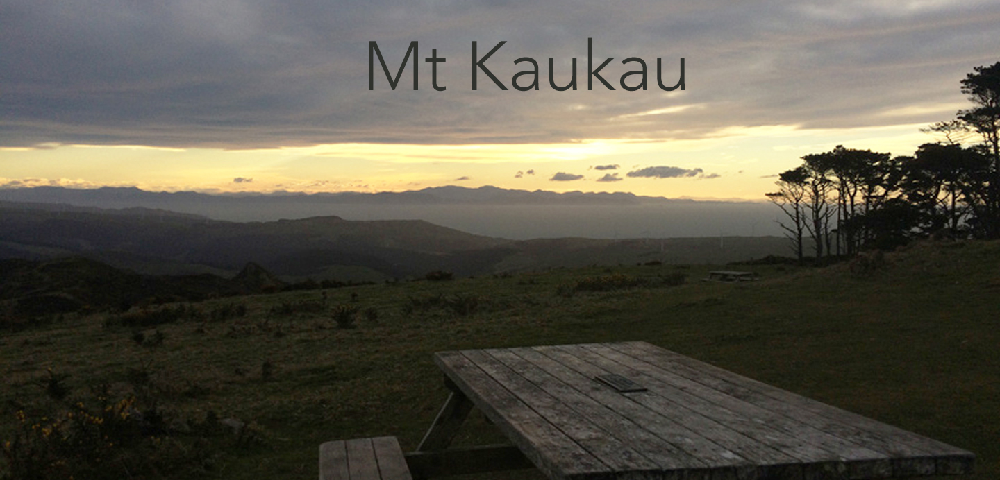
Maunga Kaukau
The summit of Mount Kaukau lies at an elevation of about 430 meters (1,411 ft) above sea level and offers scenic views of Wellington City and Wellington Harbour, the South Island, and the eastern hills. The city, harbour and the Remutaka and Tararua Ranges can be seen from the summit. On a clear day Mt. Tapuae-o-Uenuku and the Kaikoura Ranges in the South Island may be seen, whilst northwest is the Porirua Basin and the Tasman Sea.
Wellington walks
The Mount Kaukau walk is the second walk after the Mount Victoria lookout walk, that I would recommend doing if you are short on time, but would still like to get some of the best views. It gives a good overview of many of the characteristic features of Wellington such as its hills, its harbor, views of the South Island, and views of wind turbines.
Getting there
What to expect
Much of the eastern 'city side' slopes of Mount Kaukau make up Khandallah Park, which is one of the oldest parks in New Zealand, established in 1888.
Native birds such as the kereru, tui and fantail are common sights when walking through the more than 60 hectares native forest.
Want to continue?
Mount Kaukau forms part of the Northern Skyline track. From the summit there are options to continue North to Johnsonville or South along the Skyline walkway that could take you as far as Karori.
Routes to explore
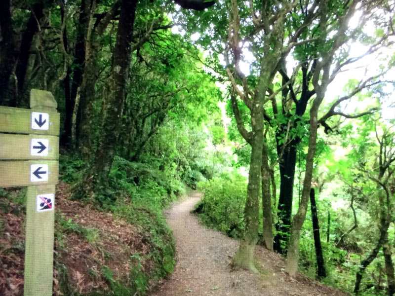
Clark St route to Summit
Walking time - 1 hour return
Difficulty - Moderate
Trail type - Gravel and dirt trail that goes through bush up the hill
Trail condition - Well maintained with suitable steps
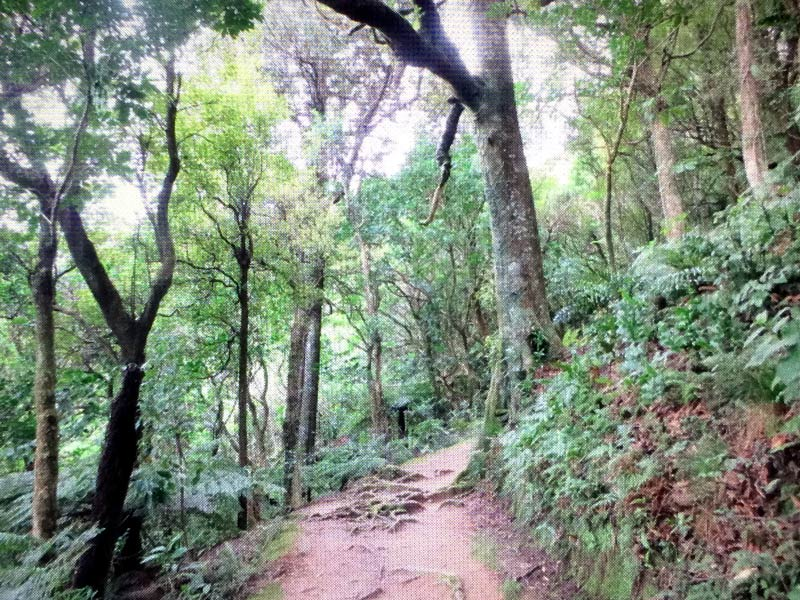
Woodmancote Rd route to Summit
Walking time - 1 hr 20 mins return
Difficulty - Moderate
Trail type - Well maintained path with multiple sets of stairs
Trail condition - Well maintained with suitable steps
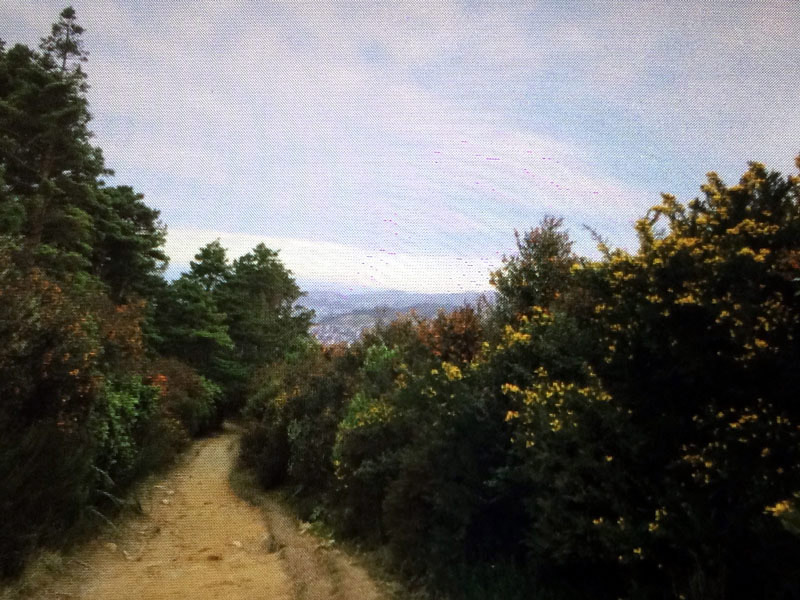
Simla Cres route to Summit
Walking time - 1 hr 10 mins return
Difficulty - Moderate to hard
Trail type - Gravel and dirt trail that goes through bush
Trail condition - Can get muddy or slippery after periods of heavy rain
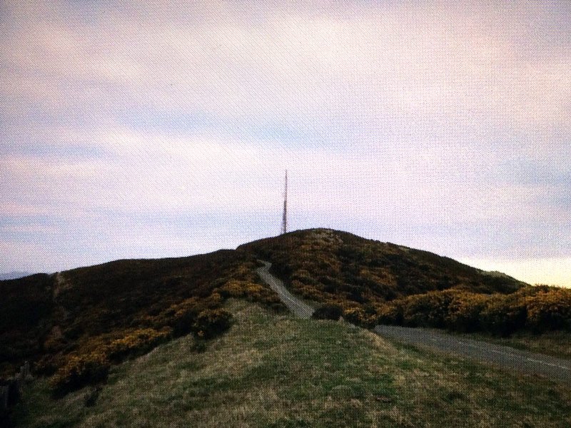
Truscott Ave route to Summit
Walking time - 50 minutes return
Difficulty - Hard
Trail type - Trail is mostly exposed and steep. No steps to ease incline
Trail condition - Can get muddy or slippery after periods of rain
Gallery
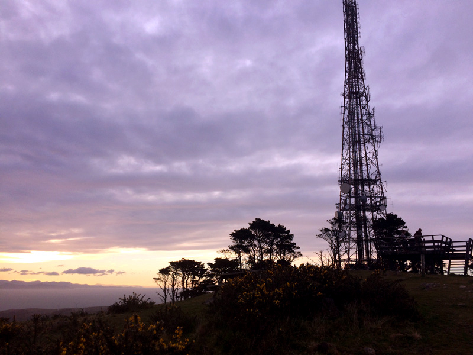
Cell-tower
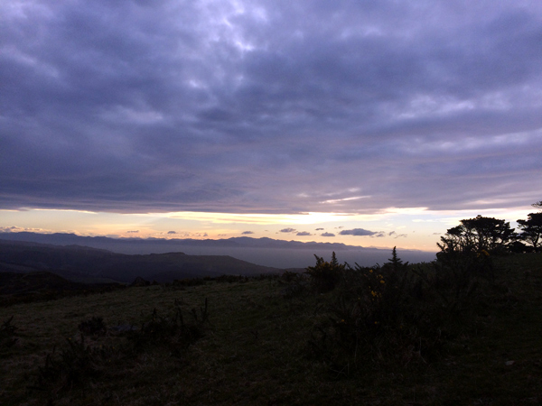
Kaikoura ranges
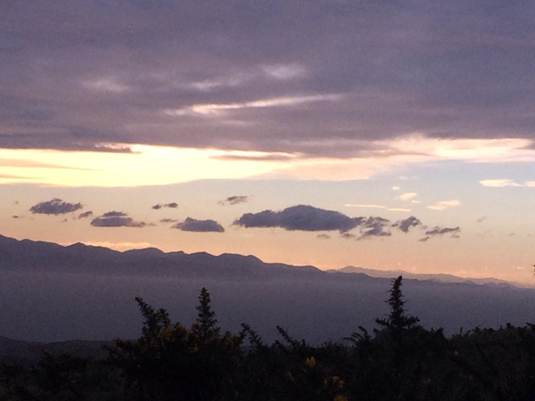
View across Cook Strait
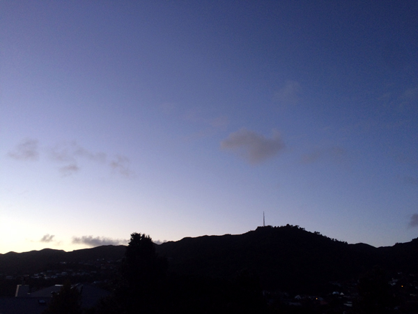
Mt Kaukau silhouette
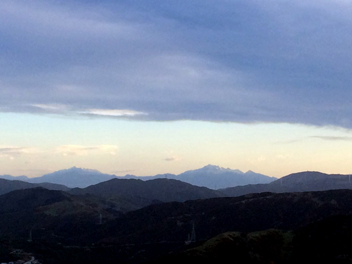
Snowy Kaikoura ranges in winter
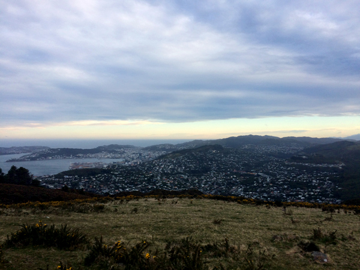
Wellington city and the suburbs
Weather
Check the forecast
While the initial part of the trail goes through a forest, the summit of Mount Kaukau is completely exposed to the elements, so the best time to walk up would be on a sunny day with little to no wind. In addition, the trail can get muddy after a period of heavy rain, so wait a couple of days before you do the walk so that the trail can dry out a bit.
Seasonal and timing
If you want to see snow on the Kaikoura Range on the South Island, which is visible from Mount Kaukau, winter or spring would be better.
Morning hours are good for light on the South Island and views to the west toward the top of the South Island. Afternoon hours are good for light on the city, the harbor, and the hills in the east.
Current conditions in Khandallah
Current conditions at Mt Kaukau summit